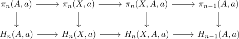
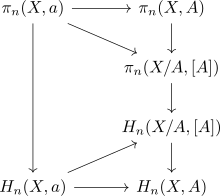

homotopy homology ladder
Proposition
Let $(X,A)$ be a pair of spaces and $a \in A$ a point.
Then there exists a commutative diagram

between the
induced by the hurewicz homomorphism
Proof
a)
Note that hurewicz homomorphism for pairs of spaces factors through the quotient, thus the top triangle commutes.
Here the trapezoid commutes by Naturality of the Hurewicz Homomorphism,

The lower triangle commutes by the niceness (?) of excision of homology